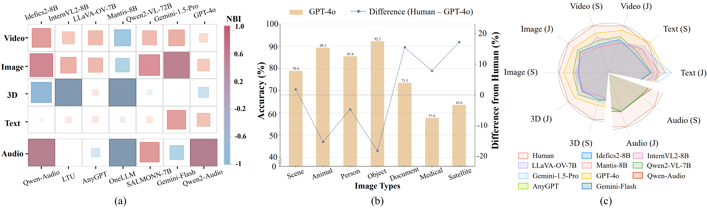

• Diverse modalities: Our dataset includes high-quality multimodal data generated by recent
popular synthetic models, covering
video,
image,
3D,
text,
audio.
• Heterogeneous category: Our collected dataset includes 26 detailed categories across different modalities, such as specialized statellite and
medical images; text like philosophy and
ancient chinese; and audio data like
singing voice, environmental sound and music.
• Multi-level tasks: LOKI includes basic ”Synthetic or Real” labels, suitable for fundamental
question settings like true/false and multiple-choice questions. It also incorporates fine-grained
anomalies for inferential explanations, , enabling tasks like abnormal detail selection and abnormal
explanation, to explore LMMs’ capabilities in explainable synthetic data detection.
• Multimodal synthetic data evaluation framework: We propose a comprehensive evaluation framework
that supports inputs of various data formats and over 25 mainstream multimodal models.
Abstract
With the rapid advancement of AI-generated content, the future internet may become saturated with synthetic media, making it increasingly challenging to discern truth and trust information. Synthetic data detection has thus garnered widespread attention, and the performance of multimodal large models (LMMs) in this task has attracted significant interest. On one hand, these models can provide natural language explanations for their authenticity judgments, paving the way for enhanced explainability in synthetic content detection. On the other hand, distinguishing between real and synthetic data tests the perception, knowledge, and reasoning abilities of LMMs—capabilities essential for advancing towards more robust Artificial General Intelligence (AGI). In response, we introduce LOKI, a novel benchmark designed to evaluate the ability of LMMs to detect synthetic data across multiple modalities. LOKI encompasses video, image, 3D, text, and audio modalities, comprising 13K carefully curated questions across 28 subcategories with clear difficulty levels. The benchmark includes coarse-grained true/false questions, in-domain multiple-choice questions, and fine-grained anomaly explanation questions, effectively assessing models in synthetic data detection and reason explanation. We evaluated 15 open-source LMMs and 3 closed-source models (including GPT-4 and Gemini) on LOKI, highlighting their potential as synthetic data detectors while also revealing current limitations such as imbalanced modality capabilities and weak logical reasoning abilities.
Finding
On the LOKI benchmark, we evaluated 22 open-source LMMs, 6 advanced proprietary LMMs,
and several expert synthetic detection models. Our key findings are summarized as follows:
Synthetic Data Detection Tasks:
● LMMs exhibit moderate capabilities in synthetic data detection tasks,
with certain levels of explainability and generalization.
● LMMs are highly promising tools for synthetic detection, offering additional interpretability
compared to expert models and access to feature-level information invisible to the human eye.
LMMs Capabilities:
● Most LMMs exhibit certain model biases, tending to favor synthetic or real data in their responses.
● Lack of expert domain knowledge, performing poorly on specialized image types like satellite and medical images.
● Unbalanced multimodal capabilities, excelling in image and
text tasks but underperforming in
3D and
audio
tasks.
● Prompting strategies, including few-shot learning and chain-of-thought, helpenhance LMMs' abilities.
These findings highlight the challenging and comprehensive nature of the LOKI task and the promising future of LMMs in synthetic data detection tasks.
Benchmark
LOKI, a multimodal synthetic data detection benchmark, designed specifically to comprehensively assess the capabilities of LMMs in detecting synthetic data. As illustrated in Figure.1, LOKI encompasses a variety of modalities including video, image, 3D, text, audio, with over 26 specific subcategories of data. The benchmark utilizes fine-grained anomaly annotations to construct a tiered variety of question types, including judgment, multiple-choice, and anomaly explanation questions, totaling over 18k questions. Table.1 provides a detailed comparison of LOKI with existing datasets, including traditional synthetic detection benchmarks and those tailored for evaluating LMMs. LOKI excels in data coverage, diversity, and depth of question design.
Click here to go to the different data sections:
Video
We collected 620 video clips by utilizing various closed-source and open-source models generating high-quality text-to-video synthesis data along with corresponding real domain sample data.
Video Case
Video Annotation
For the AI-generated video clips, we employed the LabelU tool to annotate anomaly details, including Anomalous Segments and their descriptions, Anomalous Key Frames, and Global Anomaly Descriptions. (Use LabelU for annotation)
Audio
We collected various categories of audio, including environmental sounds, music, speech, singing.
- speech and singing data ensured consistency in speaker timbre, sourced from the Logical Access part of ASVSpoof2019 and the CtrSVDD Benchmark, covering four generation paradigms: TTS, VC, SVS, and SVC.
- environmental sounds data came from DCASE 2023 Task 7, with real audio from the development set and synthetic audio generated using multiple methods from Track A.
- music data were sourced from MusicCaps, with synthetic music generated based on descriptions using MusicGen, AudioLDM2-Music, and Suno.
Audio Case
Click here to play different types of audio:


Buffering ...

Image
We have collected over 2,900 images from 7 subcategories through existing dataset extraction, internet collection, and new data synthesis. The image synthesis methods include FLUX, Midjourney, Stable Diffusion, and 10 other different methods to ensure high quality and diversity of the data.
Image Case
Click here to view different types of image:
Image Annotation
For the synthesized image data, in addition to Overall Annotations, we performed anomaly region bounding and explanations. The Region Anomaly Annotations allow for more fine-grained and specific labeling, which can be used for generating subsequent anomaly detail questions. (Use LabelU for annotation)
3D
We conducted a comprehensive analysis of OmniObject3D, selecting scanned instances as ground truth within the same domain.
By constructing prompt texts, we synthesized three NeRF models and three  3DGS models, and
supplemented them with results from the advanced commercial model Clay and some Nerf-based results from GPTEval3D.
We collected a total of over 1,200 3D models from ten different synthesis methods, including both synthesized and real scanned data.
3DGS models, and
supplemented them with results from the advanced commercial model Clay and some Nerf-based results from GPTEval3D.
We collected a total of over 1,200 3D models from ten different synthesis methods, including both synthesized and real scanned data.
3D Case
3D Annotation
Additionally, we performed Texture Anomaly Description Annotations corresponding to the RGB four views of the synthesized 3D data, as well as Normal Anomaly Description Annotations. Notably, besides the multi-view format, the 3D data also supports point clouds and panoramic videos. (Use LabelU for annotation)

Text
Based on summarization and regeneration methods, we generated counterfeit texts similar to the original texts using mainstream models such as GPT-4o, Qwen-VL-Max, Llama 3.1-405B. We collected eight categories of text data, pairing each sample with a real text and a model-generated similar text, totaling 4,320 text entries. Our text data were categorized by length and language, including short texts (50-100 characters), medium texts (100-200 characters), and long texts (over 300 characters), with a 1:1 ratio of Chinese to English data.
Text Case
Click here to view different types of text:
Questions
In terms of problem setting, our questions are mainly divided into the following four types:
- Judgement: This task requires LMMs to determine whether the input data is synthetic or real.
- Multiple-Choice: This task requires LMMs to correctly select AI-generated or real data from the provided synthetic and real data.
- Abnomal Explanation: Based on fine-grained anomaly annotation data from modalities such as video, images, and 3D, we effectively design prompts and utilize GPT-4o for generating Abnormal Detail Selection.
- Abnormal Details Selection: Furthermore, we design open-ended abnormal explanation questions, requiring LMMs to independently identify anomalies and explain their reasons.
*Here we have set up four question banks, each of which contains Judgement and Multiple-Choice questions, and users can experience some of the questions.
Click here to change examination:
Judgement
User
"You have been shown one image, possibly generated by AI. Please identify whether this image is generated by AI or not."
Click here to choose your answer:
Selection
User
"You have been shown two different images. One of the images is generated by AI. Which of the above images is most likely not generated by AI ?"
Click here to choose your answer:
Evaluation

Figure. 2 The multimodal large model capability assessment analysis results
Conclusion
In this project, we introduced LOKI, a multimodal benchmark designed to evaluate the performance of large multimodal models in detecting synthetic data across various modalities. We conducted a comprehensive study of LMMs’ performance on video, image, 3D, audio, text, and specialized subdomains, and we also analyzed LMMs’ ability to explain detailed anomalies in synthetic data. The experimental results indicate that LMMs have a certain level of competence in detecting synthetic data and a preliminary ability to explain anomalies. However, LMMs require further development in specialized domains and underexplored modalities such as audio and 3D data. Additionally, their reasoning and comparative analysis capabilities need improvement. The introduction of LOKI marks a significant step forward in advancing explainable synthetic data detection in the context of the growing prevalence of synthetic content on the internet and in evaluating LMM capabilities in the pursuit of AGI. Moreover, the relationship between synthesis and detection is adversarial yet mutually reinforcing; better and more interpretable synthetic detectors will further promote the development of AI synthesis technologies.